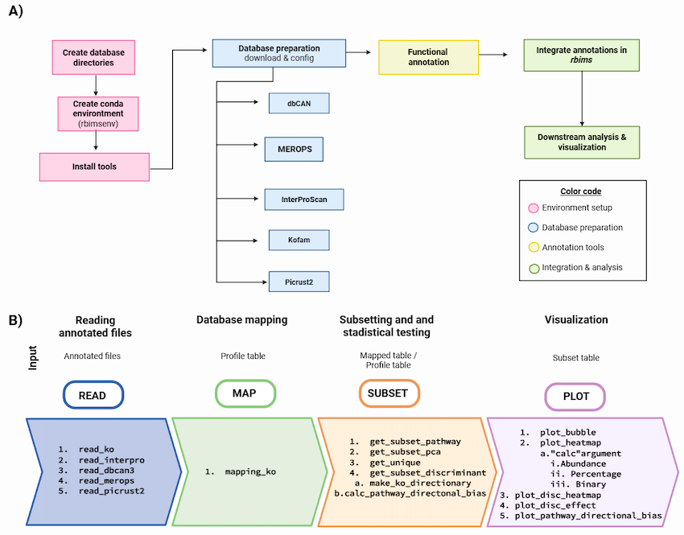

rbims (Reconstruction of Bin Metabolisms) is an R package designed to streamline the functional analysis and visualization of metagenome-assembled genomes (MAGs). It supports annotation integration from KEGG, InterProScan, dbCAN, MEROPS, and Picrust2 allowing researchers to quantify gene presence, abundance, and pathway coverage across microbial genomes.
rbims also integrates ALDEx2-derived effect sizes and random forest importance scores into a consensus table that prioritizes candidate discriminant KOs.This allows to distinguish enriched KO’s between groups.
Moreover, rbims enables a pathway-level directional bias analysis based on the discriminant output. This hierarchical framework allows rbims to distinguish between isolated gene-level differences and structurally coherent pathway-level enrichment across experimental gradients.
The package includes a curated database for hydrocarbon degradation pathways (aerobic and anaerobic) and provides tools to generate publication-ready visualizations such as heatmaps and bubble plots. It is designed to assist in exploratory trait analysis and early-stage hypothesis generation in genome-resolved metagenomics.
✨ Features
- Conda environment creation tutorial (rbimsenv) to run consistent annotations.
- Import functional annotations from KEGG, InterProScan, dbCAN, MEROPS, and PICRUSt2.
- Calculate presence, abundance, and pathway coverage per MAG.
- Subset data by gene, enzyme, pathway, or domain.
- Performs a discriminant analysis and pathway directional bias to distinguish enrichment of pathways between environmental gradients.
- Visualize functional traits with customizable bubble plots and heatmaps.
- Integrate sample or genome metadata.
- Export data frames and visualizations for publication.
- Curated database for hydrocarbon degradation not covered in KEGG.
- Performs a discriminant analysis and pathway directional bias test to distinguish between isolated gene-level differences and structurally coherent pathway-level enrichment across experimental gradients.

Figure 1: Overview of the rbims workflow. A) Steps to create the rbims conda environment integrating external tools (from KEGG, dbCAN, MEROPS, InterProScan) and running annotations. B) Workflow in R to import annotations using read() functions (blue). Map profile tables using mapping_ko() (green) and extract traits via get_subset() and calc_pathway_directional_bias() functions (orange). Results are visualized with plot() functions (purple).
🚀 Quick Install
install.packages("devtools")
library(devtools)
install_github("mirnavazquez/RbiMs")
library(rbims)If you are on macOS, install XQuartz.
If using Ubuntu, install system dependency: libcairo2-dev.
🧬 Case Study: Oil-Enriched Marine MAGs
A complete example using MAGs from a hydrocarbon enrichment experiment is available in the folder /Hidrocarburos, including annotation files and code to reproduce the figures in our manuscript.
👩💻 Contributors
-
Mirna Vázquez-Rosas-Landa – lead developer
-
Karla P. López-Martínez – co-developer, documentation, manuscript
-
Stephanie Hereira-Pacheco – functions and documentation
-
Diana Hernández-Oaxaca – conda environment setup
- Frida López-Ruiz – testing and documentation
📚 References
- Kanehisa M. and Goto S., Nucleic Acids Res. (2000)
- Kanehisa M. et al., Protein Sci. (2019)
- Kanehisa M. et al., Nucleic Acids Res. (2021)
- DiTing – hydrocarbon cycles definitions
🌐 Website
Full documentation: https://mirnavazquez.github.io/RbiMs